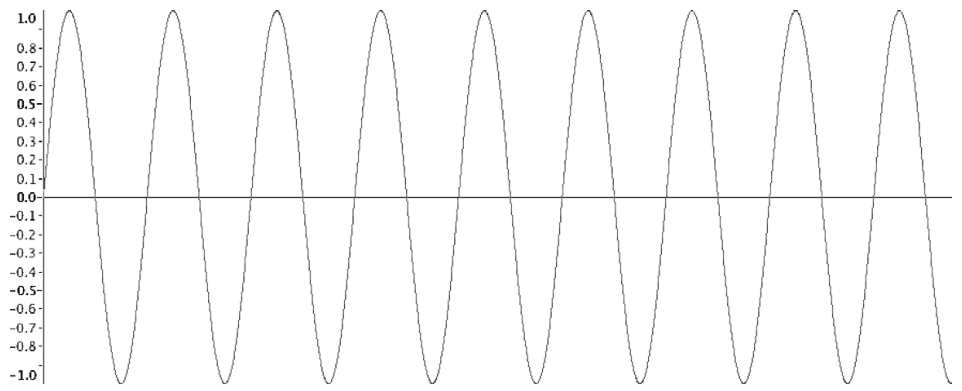
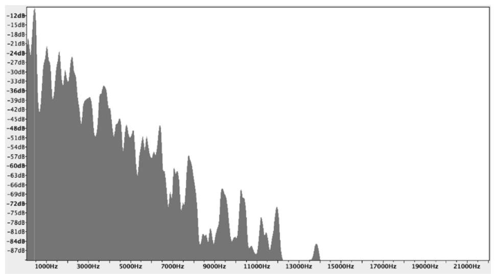
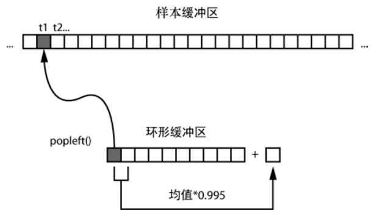
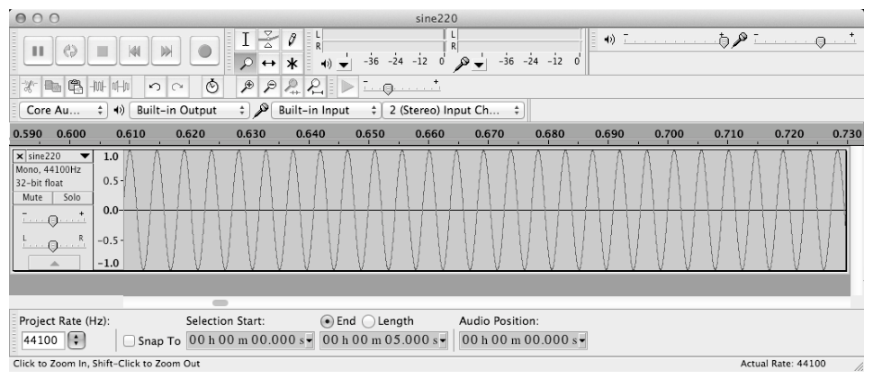
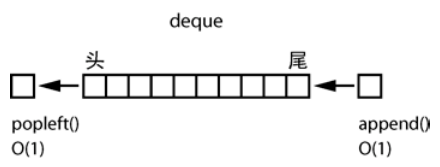
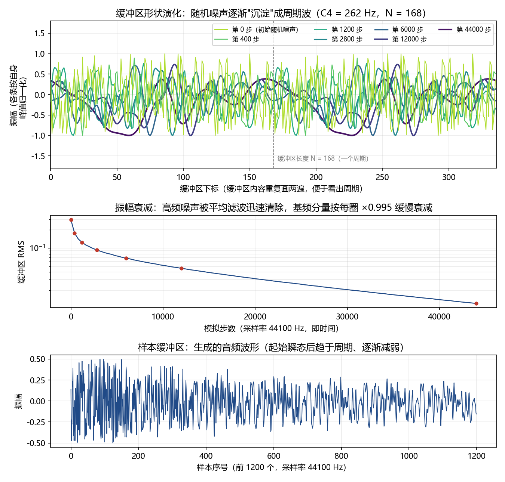
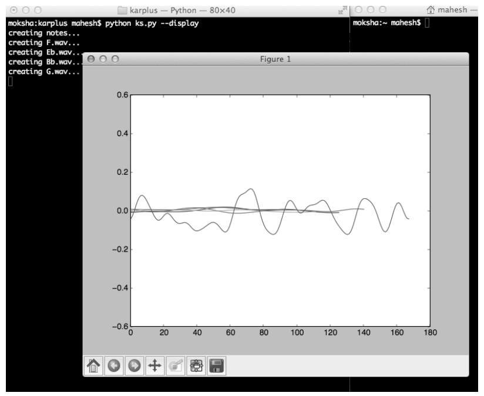

第 4 章 用 Karplus-Strong 算法产生音乐泛音#
本章解决：为什么计算机播放一个 146.83 Hz 的正弦波听起来不像吉他——乐音由基本频率和泛音共同构成；Karplus-Strong 算法用一个环形缓冲区、一次求平均（低通滤波）和一个衰减因子同时造出两者，模拟拨弦音色，并把音符保存为 WAV 文件、随机演奏。 承上启下：argparse 命令行解析与 matplotlib 绘图沿用第 2 章的套路，numpy 数组在第 3 章的细胞网格之后再度登场——这次装的是音频样本；collections.deque、wave、pygame 是本章新增角色。第 5 章的类鸟群会把 numpy 向量化推得更远。
📓 章代码：nb/ch04.ipynb（分节代码；ch01–08 含固定种子实跑输出，ch09–14 为完整实现待硬件环境）
任何乐音的主要特点是它的音调（pitch），即频率（frequency）——每秒的振动数，单位赫兹（Hz）。原声吉他第三根弦产生音符 D，频率是 146.83 Hz；在计算机上创建频率为 146.83 Hz 的正弦波，就可以模拟这种声音（图 4.1）。
遗憾的是，如果在计算机上播放这个正弦波，听起来不会像吉他或钢琴。播放相同的音符时，是什么让计算机的声音与乐器如此不同？

在吉他上拨弦时，乐器产生了不同强度的混合频率，如图 4.2 的频谱图所示：刚拨弦时声音最强，强度随着时间推移而逐渐消失。拨动吉他 D 弦听到的主要频率称为基本频率（fundamental frequency），是 146.83 赫兹；此外还能听到该频率倍数上的成分，称为泛音（overtones）。任何乐器的声音都由这种基本频率和泛音组成——正是这种组合，让吉他听起来像吉他。

要在计算机上模拟拨弦乐器的声音，就必须能同时生成基本频率和泛音。诀窍是利用 Karplus-Strong 算法（Karplus-Strong algorithm）。
拓展：一个 1979 年就诞生的物理建模合成算法
Karplus-Strong 由 Kevin Karplus 与 Alex Strong 提出（论文 Digital Synthesis of Plucked-String and Drum Timbres，1983 年发表于 Computer Music Journal）。它属于物理建模（physical modeling）语音合成：不直接"画"出波形，而是模拟弦振动的物理过程。因为实现极简（核心十几行代码）、拨弦音色逼真，至今仍出现在许多软件合成器与移动端应用中。
这个项目用 Karplus-Strong 算法产生 5 个类似吉他的音符，它们属于一个音阶（scale，一系列相关的音符）；让产生这些音符的算法可视化，并将声音保存为 WAV 文件；还会创建一种方式，随机演奏它们。学完本章能掌握：
- 用 Python 的 deque 类实现环形缓冲区；
- 使用 numpy 数组和 ufuncs；
- 用 pygame 播放 WAV 文件；
- 用 matplotlib 绘图；
- 演奏五声音阶。
除了实现 Karplus-Strong 算法，本章还会探讨 WAV 文件格式，看看如何产生五声音阶中的音符。
4.0 本章导图#
4.1 工作原理#
Karplus-Strong 算法利用偏移值构成的环形缓冲区，模拟两端固定的弦（类似于吉他弦），来模拟拨弦的声音。
环形缓冲区（ring buffer，也称为循环缓冲区，circular buffer）是一个固定长度的缓冲区（就是值的数组），但折返到本身：如果到达缓冲区的末尾，下一个元素就是缓冲区的第一个元素（deque 实现见 4.3.1 节）。
环形缓冲区的长度 N 与振动的基本频率相关：
其中 S 是采样率，f 是频率。模拟开始时，缓冲区中填充一些随机值，范围在 [−0.5, 0.5]，可以认为代表了拨弦在振动时的随机偏移（拨弦能量）。除了环形缓冲区，还需要一个样本缓冲区（sample buffer），保存任何特定时间的声音强度——它表示产生的声音随时间变化的振幅；这个缓冲区的长度和采样率决定了声音片段的长度。
拓展：为什么缓冲区长度决定音高
物理上，两端固定的弦基本频率与弦长成反比（\(f = v/2L\)，v 是波在弦上的传播速度）。Karplus-Strong 把"弦长"数字化成环形缓冲区的长度：缓冲区内容绕一圈回到起点恰好经历 N 个样本，这就是基频的一个周期；每秒走 S 个样本，所以基频 \(f = S/N\)，即 N = S/f。缓冲区越长，音越低——和长弦音低、短弦音高是同一个道理。
4.1.1 模拟#
模拟持续进行，直到样本缓冲区被一种反馈方案填满，如图 4.3 所示。对于模拟的每一步，做以下几件事：
- 将环形缓冲区的第一个值存入样本缓冲区；
- 计算环形缓冲区前两个元素的平均值；
- 平均值乘以一个衰减系数（这里是 0.995）；
- 将该值添加到环形缓冲区的末尾；
- 移除环形缓冲区的第一个元素。

这种反馈方案旨在模拟能量通过一根振动的弦。两个设计都有明确的物理含义：
- 求平均相当于"低通滤波器"（low-pass filter）：切断较高频率，允许较低频率通过，从而消除高次谐波（即基频的较大倍数）——我们的主要兴趣是基频；
- 衰减因子 0.995：模拟波沿着弦来回传播的能量损失。
根据物理学，振动弦的基本频率与它的长度成反比；因为要产生一定频率的声音，所以选择一个长度与该频率成反比的环形缓冲区（N = S/f）。
拓展：平均为什么滤掉高频，音符又怎么「消失」
对相邻两个样本取平均，是最简单的低通滤波：周期恰为两个样本的最高频分量（奈奎斯特频率）平均后严格为零，频率越低的分量被"削"得越少。缓冲区内容每绕一圈（基频的一个周期），基频幅值约乘一次 0.995（基频变化缓慢，相邻平均几乎不削弱它），高频噪声却被平均反复压低——几圈之后，信号几乎只剩基频。再叠加每圈 ×0.995 的能量衰减：t 秒后基频幅值正比于 \(0.995^{\,f\cdot t}\)。C4（262 Hz）响 1 秒约剩 \(0.995^{262} \approx 27\%\)；降B（466 Hz）每秒绕圈更多，1 秒只剩约 10%——高音更短促，恰与现实吉他的表现一致。
来看该算法执行的一个简单例子。下表表示两个连续时间步骤的环形缓冲区，每个值表示声音的振幅。缓冲区有 5 个元素，开始时填入了一些数字：
| 时间步骤 | 值 1 | 值 2 | 值 3 | 值 4 | 值 5 |
|---|---|---|---|---|---|
| 1 | 0.1 | −0.2 | 0.3 | 0.6 | −0.5 |
| 2 | −0.2 | 0.3 | 0.6 | −0.5 | −0.199 |
从第 1 步转到第 2 步：第一个值 0.1 被删除（存入样本缓冲区），第 1 步所有后续值以相同顺序前移成第 2 行；第 2 步末尾补上的新值，是第 1 步首、末两个值的衰减平均值：
每一步都重复"取头 → 平均 ×0.995 → 加尾 → 弹头"，样本缓冲区就这样逐步积累出最终的音频数据。
4.1.2 创建 WAV 文件#
波形音频文件格式（WAV，Waveform Audio File Format）用于存储音频数据。这种格式对小的音乐项目比较方便：简单，不需要处理复杂的压缩技术。
在最简单的形式中，WAV 文件由一系列比特构成，用固定比特数表示给定时间点所记录的声音振幅——比特数称为分辨率（resolution），本项目使用 16 位。WAV 文件还有采样率（sampling rate），是音频每秒采样或读取的次数；本项目采用 44100 赫兹，即 CD 中使用的采样率。
先用公式表示正弦波（A 是声波的振幅，f 是频率，t 是当前时间的索引）：
计算机要按采样率逐个样本生成数值，把 \(t = i/R\) 代入（i 是样本的索引，R 是采样率）：
原书笔误：200 Hz 应为 220 Hz
原书此处印作"创建一个 200 赫兹的正弦波 WAV 文件"，但代码中的 220.0、文件名 sine220.wav 与图 4.4 都对应 220 Hz。按 220 Hz 理解。
用这两个方程，可以创建一个 220 Hz 的正弦波 WAV 文件：
# ===== 书 4.1.2 节：生成 5 秒 220 Hz 正弦波 WAV =====
import numpy as np
import wave, math
sRate = 44100 # 采样率 R：每秒 44100 个样本（CD 标准）
nSamples = sRate * 5 # 5 秒共 220500 个样本
x = np.arange(nSamples) / float(sRate) # 样本索引 i 除以 R → 时间轴（0 到 5 秒）
vals = np.sin(2.0 * math.pi * 220.0 * x) # A = sin(2πfi/R)：ufunc 对整个数组逐元素求正弦
data = np.array(vals * 32767, dtype=np.int16).tobytes() # 放大到 16 位量程，转字节串
file = wave.open('sine220.wav', 'wb') # 以写模式新建 WAV 文件
file.setparams((1, 2, sRate, nSamples, 'NONE', 'uncompressed'))
# 依次为：通道数 1（单声道）、样本宽度 2 字节（16 位）、帧率 44100、
# 总帧数、压缩类型 'NONE'（无压缩）、压缩名称（描述串）
file.writeframes(data) # 写入音频数据
file.close()
逐行看：先根据第二个正弦波方程创建振幅值的 numpy 数组——对数组应用 sin() 这样的函数（ufunc，通用函数，逐元素作用），numpy 数组是快速、便捷的方式。计算好的、在 [−1, 1] 范围内的正弦波值乘以 32767 放大为 16 位值（16 位带符号整数的取值范围是 −32768～32767），并转换成字节串，以便写入文件。然后为 WAV 文件设置参数：单通道（单声道）、两字节（16 位）、无压缩。

在 Audacity 中打开生成的文件，正如预期，看到的是频率 220 赫兹的正弦波；播放该文件，会听到 5 秒的 220 Hz 音调。
Python 3 适配：tostring() 已被 NumPy 2.x 移除
原书写作 np.array(vals*32767, 'int16').tostring()，有两处要改：旧式位置参数 'int16' 改为关键字 dtype=np.int16，可读性更好；tostring() 是 tobytes() 的弃用别名，NumPy 2.0 起已彻底移除，运行会直接 AttributeError。本笔记改写为 np.array(vals * 32767, dtype=np.int16).tobytes()。
4.1.3 小调五声音阶#
音阶（scale）是一系列升高或降低音高（频率）的音符。音程（interval）是两个音高之间的差。通常，一首音乐的所有音符都从特定音阶中选择。半音（semitone）是音阶的基本单位，是西方音乐最小的音程；全音（whole tone）是半音长度的两倍。大调音阶（major scale）是最常见的音阶，间隔模式是"全音-全音-半音-全音-全音-全音-半音"。
本章快速进入五声音阶（pentatonic scale）——五个音符的音阶。美国著名歌曲 "Oh! Susanna" 就是基于五声音阶的。这种音阶的一个变种是小调五声音阶（minor pentatonic scale），音符序列定义为"（全音+半音）-全音-全音-（全音+半音）-全音"（全音+半音，即 3 个半音）。因此，C 小调五声音阶包含音符 C、降E、F、G 和降B。
表 4-1 列出了小调五声音阶中 5 个音符的频率，我们将用 Karplus-Strong 算法来产生它们（C4 表示钢琴第 4 个八度的 C，或习惯称为中音 C）：
表 4-1 小调五声音阶的音符
| 音符 | 频率（Hz） |
|---|---|
| C4 | 261.6 |
| 降E（E♭4） | 311.1 |
| F | 349.2 |
| G | 392.0 |
| 降B（B♭4） | 466.2 |
拓展：这些频率数是怎么来的
现代乐器用十二平均律（equal temperament）定音：一个八度按等比切成 12 个半音，相邻半音频率比为 \(2^{1/12}\)，基准音 A4 = 440 Hz。某音相对 A4 差 n 个半音，频率就是 \(440 \times 2^{n/12}\)：C4 低 9 个半音 → 261.63 Hz；降E4 低 6 个 → 311.13 Hz；F4 低 4 个 → 349.23 Hz；G4 低 2 个 → 392.00 Hz；降B4 高 1 个 → 466.16 Hz。与表 4-1 完全吻合。音程结构也对得上：C→降E→F→G→降B 相邻间隔为 3、2、2、3 个半音（即 全+半、全、全、全+半），降B 再往上 2 个半音就回到高八度 C5——这正是原书完整代码注释 "piano C4-Eb-F-G-Bb-C5" 的含义。
这些数字就是程序里 pmNotes 字典的来源（代码中做了取整，见 4.3.5 节）。
4.2 所需模块#
| 模块 | 用途 |
|---|---|
| wave | 创建 WAV 格式的音频文件（标准库） |
| numpy | 用数组实现 Karplus-Strong 算法（ufunc 逐元素运算） |
| collections.deque | 实现环形缓冲区（标准库） |
| pygame | 播放 WAV 文件 |
| matplotlib | --display 模式下可视化算法运行（完整代码中使用） |
4.3 代码#
现在开发实现 Karplus-Strong 算法所需的各种代码片段，然后将它们合并成完整的程序（完整清单见 4.4 节）。
4.3.1 用 deque 实现环形缓冲区#
Karplus-Strong 算法使用环形缓冲区来生成一个音符，这里用 Python 的 deque 容器实现。deque（发音为 "deck"，double-ended queue，双端队列）是标准库 collections 模块的一部分，用一个数组提供了专门的容器数据类型；可以从 deque 的开始（头）或末尾（尾）插入或删除元素（图 4.5）。这种插入和删除过程是 O(1)（"常数时间"）操作——不论 deque 的容器变得多大，需要的时间都相同。

下面的代码展示了如何在 Python 中使用 deque：
# ===== 书 4.3.1 节：deque 演示（交互式 shell）=====
>>> from collections import deque
>>> d = deque(range(10)) # 传入 range() 生成的列表，创建 deque 容器
>>> print(d)
deque([0, 1, 2, 3, 4, 5, 6, 7, 8, 9])
>>> d.append(-1) # 在末尾（尾）添加一个元素
>>> print(d)
deque([0, 1, 2, 3, 4, 5, 6, 7, 8, 9, -1])
>>> d.popleft() # 从头部弹出（删除）第一个元素，返回 0
0
>>> print(d)
deque([1, 2, 3, 4, 5, 6, 7, 8, 9, -1])
先传入 range() 方法创建的列表，创建 deque 容器；append(-1) 将一个元素添加到 deque 容器的末尾；popleft() 从 deque 的头部弹出（删除）第一个元素。这两个操作都很快。
Python 3 适配：print 语句
原书演示的最后一行印作 >>> print d——这是 Python 2 的 print 语句。Python 3 中 print 是函数，必须写成 print(d)。
拓展：为什么不用 list
普通 list 从头部删除用 pop(0)：删掉第一个元素后，后面所有元素都要整体前移一格，是 O(N) 操作，缓冲区越长越慢。deque 在头尾各维护一个指针，append/popleft 都是 O(1)——环形缓冲区每一步都要"删头加尾"，deque 是天然匹配的容器。
4.3.2 实现 Karplus-Strong 算法#
用 deque 容器实现环形缓冲区，实现 Karplus-Strong 算法：
# ===== 书 4.3.2 节：generateNote——算法核心 =====
import random
import numpy as np
from collections import deque
# generate note of given frequency
def generateNote(freq):
nSamples = 44100 # 样本数 = 采样率 → 一秒钟的声音片段
sampleRate = 44100 # 采样率 S（Hz）
N = int(sampleRate / freq) # 环形缓冲区长度 N = S/f，决定基频
# initialize ring buffer
buf = deque([random.random() - 0.5 for i in range(N)]) # ① [-0.5, 0.5] 随机值 = 拨弦能量
# initialize samples buffer
samples = np.array([0] * nSamples, 'float32') # ② 样本缓冲区（最终声音）
for i in range(nSamples):
samples[i] = buf[0] # ③ 头部样本存入样本缓冲区
avg = 0.995 * 0.5 * (buf[0] + buf[1]) # ④ 平均（低通滤波）× 衰减因子
buf.append(avg) # ⑤ 追加到环形缓冲区末尾
buf.popleft() # ⑥ 移除头部 → 缓冲区滚动一格
# convert samples to 16-bit values and then to bytes
# the maximum value is 32767 for 16-bit
samples = np.array(samples * 32767, dtype=np.int16) # ⑦ 放大到 16 位带符号整数
return samples.tobytes() # ⑧ 转字节串，供 wave 模块写文件
逐块看：
N = int(sampleRate/freq)：4.1 节的 N = S/f。以 C4（262 Hz）为例，N = int(44100/262) = 168。- ① 用范围在 [−0.5, 0.5] 的随机数初始化 deque——随机偏移代表拨弦能量；
- ② 建立一个浮点数组保存声音采样，长度与采样率相符，即生成一秒钟的声音片段；
- ③ 主循环 44100 步，每步先把 deque 的第一个元素复制到采样缓冲区；
- ④
avg = 0.995*0.5*(buf[0] + buf[1])：低通滤波器和衰减在此生效——前两个元素的平均 × 衰减因子； - ⑤⑥ 把平均值添加到末尾、移除第一个元素，环形缓冲区"滚动"前进一格；
- ⑦ samples 数组的每个值乘以 32767，转成 16 位格式（16 位带符号整数范围 −32768～32767）；
- ⑧ 转成字节串（bytes）——这是 wave 模块的要求，用于将数据保存到文件。
原书笔误：衰减系数 0.996
原书 4.3.2 节代码片段印作 avg = 0.996*0.5*(buf[0] + buf[1])，与 4.1.1 节演算示例（0.995 × … = −0.199）和 4.4 节完整代码（0.995）不一致。本笔记按 0.995。
Python 3 适配：tostring() 已移除
原书结尾写作 samples = np.array(samples*32767, 'int16') 加 return samples.tostring()。NumPy 2.x 移除了 tostring()（它是 tobytes() 的弃用别名），运行会直接 AttributeError；旧式位置参数 'int16' 也建议改成关键字写法。修正后的两行：
顺带一提，初始化样本缓冲区的 np.array([0]*nSamples, 'float32') 用现代写法更直接：np.zeros(nSamples, dtype=np.float32)。
原书完整代码在 generateNote 里还挂着一个可视化开关：全局变量 gShowPlot 为真时，进入循环前 plt.plot(buf) 画出初始缓冲区，之后每 1000 步用 axline.set_ydata(buf) 刷新曲线——这就是 --display 模式"观看算法工作"的机关（见 4.3.5 与 4.5 节）。本笔记把这个机制改成离线版：每 400 步记录一次缓冲区快照，最后一次性画出演化过程：
# ===== 本笔记实跑：gShowPlot 交互刷新的离线版 =====
snapshots = [(0, list(buf))] # （步数, 缓冲区快照）
for i in range(nSamples):
samples[i] = buf[0] # 与原书相同的五步主循环
avg = 0.995 * 0.5 * (buf[0] + buf[1])
buf.append(avg)
buf.popleft()
if (i + 1) % 400 == 0: # 每 400 步记录一次（原书每 1000 步交互刷新）
snapshots.append((i + 1, list(buf)))
对 C4（262 Hz，N = 168）实跑的结果如图 4.7：

图 4.7 的三个面板分别对应算法的三个侧面：
- 上：第 0 步是纯随机噪声（拨弦的初始能量）；第 400 步大起伏已现雏形；6000 步之后波形已经光滑；44000 步时成了一个幅度小而干净的周期波——随机噪声逐渐"沉淀"成周期波；
- 中：RMS 在前几百步急剧下降，是平均滤波在快速清除高频噪声的能量；之后的直线段对应基频按每圈 ×0.995 的缓慢衰减；
- 下：样本缓冲区（最终音频）起始有瞬态，随后趋于周期、逐渐减弱——这正是"拨弦"的包络。
再验证 N = int(44100/freq) 对五个音符的取值（目标频率取自表 4-1）：
| 音符 | 目标频率 f（Hz） | N = int(44100/f) | 实际频率 44100/N（Hz） | 偏差 |
|---|---|---|---|---|
| C4 | 261.6 | 168 | 262.5 | +5.9 音分 |
| 降E | 311.1 | 141 | 312.8 | +9.2 音分 |
| F | 349.2 | 126 | 350.0 | +4.0 音分 |
| G | 392.0 | 112 | 393.8 | +7.7 音分 |
| 降B | 466.2 | 94 | 469.1 | +10.9 音分 |
拓展：N 取整带来的音高偏差
N 截断取整后，实际基频是 44100/N 而非目标 f。频率越高、N 越小，同样截断一格造成的相对偏差越大（表中最右列以音分计，1 音分 = 一个半音的 1/100；最大约 11 音分）。人耳对 5 音分以内的偏差基本无感，10 音分也多在并排对比时才听得出。想微调音高，直接改 N 最直接——它才是决定基频的最终变量。
4.3.3 写 WAV 文件#
拥有音频数据后，可以用 Python 的 wave 模块将其写入 WAV 文件：
# ===== 书 4.3.3 节：writeWAVE =====
import wave
def writeWAVE(fname, data):
# open file
file = wave.open(fname, 'wb') # ① 以写二进制模式创建 WAV 文件
# WAV file parameters
nChannels = 1 # 通道数：1 = 单声道
sampleWidth = 2 # 样本宽度：2 字节 = 16 位
frameRate = 44100 # 帧率（采样率）：44100 Hz
nFrames = 44100 # 总帧数：44100 帧 = 1 秒
# set parameters
file.setparams((nChannels, sampleWidth, frameRate, nFrames,
'NONE', 'noncompressed')) # ② 设为单声道、16 位、无压缩格式
file.writeframes(data) # ③ 将数据写入文件
file.close()
① 行创建 WAV 文件；② 行 setparams 将参数设置为单声道、16 位、无压缩——六元组依次是：通道数、样本宽度（字节）、帧率、总帧数、压缩类型（必须是 'NONE'）、压缩名称（描述串）；③ 行写入数据。
压缩名拼写不一致不是 bug
原书 4.1.2 节用 'uncompressed'、4.3.3 节用 'noncompressed'。wave 模块只把压缩类型 'NONE' 当真，第 6 项描述串原样存进文件头即可，两种拼写都能正常工作。
4.3.4 用 pygame 播放 WAV 文件#
现在用 Python 的 pygame 模块播放算法生成的 WAV 文件。pygame 是用来编写游戏的流行 Python 模块，基于简单直接媒体层（SDL，Simple DirectMedia Layer）库——高性能的底层库，让你能访问声音、图形以及计算机的输入设备。
为方便起见，代码封装在 NotePlayer 类中：
# ===== 书 4.3.4 节：NotePlayer =====
import pygame
# play a WAV file
class NotePlayer:
# constructor
def __init__(self):
pygame.mixer.pre_init(44100, -16, 1, 2048) # ① 预初始化 mixer：采样率 44100、
# 16 位有符号（-16）、单声道、缓冲区 2048
pygame.init() # 注意 pre_init 必须在 init 之前
# dictionary of notes
self.notes = {} # ② 音符字典：文件名 → Sound 对象
# add a note
def add(self, fileName):
self.notes[fileName] = pygame.mixer.Sound(fileName) # ③ 创建声音对象，存入字典
# play a note
def play(self, fileName):
try:
self.notes[fileName].play() # ④ 按文件名取出声音对象并播放
except:
print(fileName + ' not found!')
def playRandom(self):
"""play a random note"""
index = random.randint(0, len(self.notes) - 1) # ⑤ 从范围 [0, 4] 随机选整数
note = list(self.notes.values())[index] # ⑥ 从字典值中挑出对应音符播放
note.play()
- ① 预先初始化 pygame 的 mixer（混音器）：44100 的采样率、16 位的有符号值（−16 的负号表示有符号）、单声道、缓冲区大小 2048；
- ② 创建一个音符的字典，针对文件名保存 pygame 的声音对象（Sound）；
- ③ add() 方法创建声音对象并保存在 notes 字典中；
- ④ play() 按文件名从字典取出声音对象播放，找不到时打印提示；
- ⑤⑥ playRandom() 从已生成的五个音符中随机选取播放：randint() 从范围 [0, 4] 选择一个随机整数，再从字典的值中挑选对应音符。
本机未装 pygame：播放代码不实跑
本笔记的实跑环境没有 pygame，本节与 4.3.5 节的播放部分只呈现代码、不实际运行；WAV 生成与波形可视化（numpy/matplotlib）已实跑，见图 4.7。
拓展：pre_init 必须在 init 之前
pygame.init() 会按"当前参数"初始化 mixer；要让自定义参数生效，必须先 pre_init 再 init。顺序反了，mixer 以默认参数创建，播放 16 位单声道的 WAV 可能变调、卡顿或直接报错。
拓展：裸 except 是坏习惯
原书 play() 用 except: 捕获一切异常——包括变量名拼错、Ctrl+C 的 KeyboardInterrupt 在内的所有错误都被吞成一句 'not found!'。工程上应写成 except KeyError:，只捕获"文件不在字典里"这一种情况。
4.3.5 main() 方法#
main() 创建音符并处理各种命令行选项，以演奏音符。argparse 建立三个开关选项（与第 2 章同款套路），随后组装生成与播放逻辑，骨架如下（完整清单见原书 4.4 节）：
# ===== 书 4.3.5 节：main() 骨架（概括）=====
parser = argparse.ArgumentParser(
description="Generating sounds with the Karplus-Strong algorithm")
# add arguments
parser.add_argument('--display', action='store_true', required=False) # 显示波形演化
parser.add_argument('--play', action='store_true', required=False) # 随机演奏
parser.add_argument('--piano', action='store_true', required=False) # 键盘随机发声
args = parser.parse_args()
# show plot if flag set
if args.display:
gShowPlot = True # 全局开关：generateNote 内每 1000 步刷新缓冲区曲线
plt.ion() # 启动 matplotlib 交互模式
# create note player
nplayer = NotePlayer()
print('creating notes...')
for name, freq in list(pmNotes.items()): # pmNotes = {'C4': 262, 'Eb': 311, ...}
fileName = name + '.wav'
if not os.path.exists(fileName) or args.display: # 已有 WAV 且非 --display 就跳过计算
data = generateNote(freq) # 生成音频数据
print('creating ' + fileName + '...')
writeWAVE(fileName, data) # 写入 WAV 文件
else:
print(fileName + ' already created. skipping...')
nplayer.add(fileName) # 把音符加入播放器
if args.display: # --display 时边生成边播放
nplayer.play(fileName)
time.sleep(0.5)
# play a random tune
if args.play:
while True: # 无限循环，Ctrl+C 退出
try:
nplayer.playRandom() # 随机播一个音符
# rest - 1 to 8 beats
rest = np.random.choice([1, 2, 4, 8], 1, # 随机休止 1/2/4/8 拍
p=[0.15, 0.7, 0.1, 0.05])
time.sleep(0.25 * rest[0]) # 每拍 0.25 秒
except KeyboardInterrupt:
exit()
要点：
- pmNotes 全局字典定义五个音符频率：
{'C4': 262, 'Eb': 311, 'F': 349, 'G': 391, 'Bb': 466}——表 4-1 的取整版（392 取成 391，低了约 4 音分，听感无差）。 - --display：置 gShowPlot = True，并调用 plt.ion() 启动 matplotlib 交互模式——generateNote 内每 1000 步刷新一次缓冲区曲线，实时观看波形从随机噪声到周期波的演变（图 4.6、图 4.7）。
- 生成优化：os.path.exists() 检查 WAV 文件是否已创建；已创建且非 --display 就跳过计算——多次运行程序时省时。
- --play：无限循环调用 playRandom() 随机播放；要让音符序列听起来更像音乐，需要在音符之间添加休止符——np.random.choice([1, 2, 4, 8], 1, p=[0.15, 0.7, 0.1, 0.05]) 从 ½/4/8 拍中选择随机的休止时间，概率分别设为 0.15/0.7/0.1/0.05：两拍的休止最有可能，八拍的休止最不可能（概率之和必须为 1）。每拍按 0.25 秒计，time.sleep(0.25*rest[0])。试着改变这些值，创建自己的音乐风格。Ctrl+C 触发 KeyboardInterrupt 后 exit() 退出。
- --piano：进入 pygame 事件循环，检测到 KEYUP 事件就随机发声（原书完整代码如此；4.7 节实验 3 让你把它升级成 A/S/D/F/G 五键对应五个音符）：
# --piano 模式（原书 4.4 节完整代码）：按键随机发声
if args.piano:
while True:
for event in pygame.event.get():
if event.type == pygame.KEYUP: # 松开按键时发声
print("key pressed")
nplayer.playRandom()
time.sleep(0.5)
4.4 完整代码#
完整程序 ks.py 的组装顺序：import（sys、os、time、random、wave、argparse、pygame、numpy、collections.deque、matplotlib.pyplot）→ 全局变量 gShowPlot 与 pmNotes → writeWAVE() → generateNote() → NotePlayer 类 → main() → if __name__ == '__main__': main()。各部分在 4.3.1–4.3.5 节已逐一给出，完整清单见原书 4.4 节，或从 GitHub 仓库 electronut/pp 的 karplus/ks.py 下载。
其中 gShowPlot 的可视化挂载在 generateNote 内部：进入主循环前 axline, = plt.plot(buf) 画出初始缓冲区曲线，之后每 1000 步 axline.set_ydata(buf) 加 plt.draw() 刷新——图 4.7 就是这个机制的离线复刻版。
4.5 运行拨弦模拟#
在命令行输入：
排版勘误：命令里的破折号
原书命令印作 –display（单个长破折号），实际应为两个连字符 --display；下一条 –play 同理。
matplotlib 绘图展示了 Karplus-Strong 算法如何转换初始随机偏移，创建所需频率的波，如图 4.6 所示。

图 4.6 是 --display 的交互窗口：曲线就是环形缓冲区在某一时刻的内容，随播放不断刷新。本笔记在 4.3.2 节用 Agg 后端离线复刻了同一过程，并补充了 RMS 衰减与音频波形面板（图 4.7）。
现在尝试用这个程序播放随机音符：
这会用生成的五声音阶 WAV 文件播放随机音符序列（需要 pygame 与声卡；本笔记环境未装 pygame，播放未实跑）。
4.6 小结#
这个项目用 Karplus-Strong 算法模拟拨弦的声音，利用生成的 WAV 文件来播放音符。核心机制回顾：环形缓冲区长度 N = S/f 决定基频，[−0.5, 0.5] 的随机初始化代表拨弦能量；每步"存头部 → 前两值平均 ×0.995 → 加尾部 → 弹头部"，求平均就是低通滤波（削掉高次谐波、留下基频），衰减因子模拟能量损失；结果放大成 16 位样本、写进 44100 Hz 的 WAV 文件；deque 让头尾操作保持 O(1)，pygame 负责播放，--display 用 matplotlib 直观展示"噪声沉淀成周期波"的全过程。
4.7 实验#
三个进一步尝试的方向：
- 双弦合鸣：重现两根不同频率的弦一起振动发出的声音。记住，Karplus-Strong 算法产生的声音振幅可以叠加（在放大到 16 位值并生成 WAV 文件之前）；现在，在第一次拨弦和第二次拨弦之间增加一点延时。
- 读谱演奏：写一个方法，从文本文件中读取音乐并生成音符，然后播放。使用的格式可以是音符名称后面跟上整数的休止时间，就像
C4 1 F4 2 G4 1 …。 - 键盘钢琴：为项目添加真正的 --piano 命令行选项——按键盘上的 A、S、D、F 和 G 键，播放五个音符（提示：用 pygame.event.get 和 pygame.event.type）。
坑与陷阱#
8 个容易踩的坑
- tostring() 在 NumPy 2.x 已移除：generateNote 的返回值与 4.1.2 节的 data 都用到它，运行直接 AttributeError。统一改
tobytes()。 - 忘乘 32767 = 静音：[−1, 1] 的浮点样本若不放大就直接转 int16，会被截成 0 和 ±1，WAV 近乎无声。放大必须在类型转换之前。
- N 才是音高的最终变量：N = int(S/f) 截断取整，实际频率是 S/N（C4 用 262 → N = 168 → 实际 262.5 Hz）。想调音改 N，别只改 freq。
- deque 必须成对操作：只 append 不 popleft，缓冲区无限膨胀；只 popleft 不 append，几步后 buf[1] 就越界（高频音符 N 小，出问题更快）。
- pre_init 要在 init 之前：顺序反了 mixer 按默认参数初始化，播放 16 位单声道 WAV 可能变调或报错。
- np.random.choice 的 p 必须和为 1：[0.15, 0.7, 0.1, 0.05] 恰好为 1；改概率时差一点都会 ValueError。
- --play 是死循环：退出全靠 Ctrl+C（KeyboardInterrupt 被 try 捕获后 exit()）；在别人机器上演示前先说清楚。
- 裸 except 吞异常：play() 的
except:把一切异常都打印成 'not found!'，调试时先换成except KeyError:。
速览#
- 乐音 = 基本频率 + 泛音：吉他 D4 基频 146.83 Hz，泛音在它的倍数处——纯正弦波只有基频，所以"不像吉他"。
- Karplus-Strong 算法：环形缓冲区模拟弦，长度 \(N = S/f\) 定基频；缓冲区填 [−0.5, 0.5] 随机值，代表拨弦能量。
- 每步五动作：buf[0] 存入样本缓冲区 → avg = 0.995 × (buf[0]+buf[1])/2 → 加到尾部 → 弹出头部，循环往复。
- 平均 = 低通滤波器，消除高次谐波；0.995 衰减因子模拟能量损失；t 秒后基频幅值正比于 \(0.995^{f\cdot t}\)。
- WAV：16 位分辨率、44100 Hz（CD）采样率；正弦波离散化 \(A = \sin(2\pi f i/R)\)；×32767 转 int16，tobytes() 写文件；setparams 六参数 = 通道数、位宽、帧率、帧数、'NONE'、压缩名。
- 小调五声音阶 = （全+半）-全-全-（全+半）-全；C 调五音 C4 261.6 / 降E 311.1 / F 349.2 / G 392.0 / 降B 466.2（可由十二平均律 A4 = 440 Hz 推出）。
- deque（发音 "deck"）：头尾插入删除 O(1)，是实现环形缓冲区的天然容器（list 的 pop(0) 是 O(N)）。
- generateNote 三段式：N = int(44100/freq) 建缓冲区 → 44100 步主循环（存头、平均 ×0.995、加尾、弹头）→ ×32767 转 16 位、tobytes() 返回。
- NotePlayer：pre_init(44100, −16, 1, 2048) 必须先于 pygame.init()；notes 字典保存文件名 → Sound 对象；playRandom 用 randint 从 [0, len−1] 随机选。
- main 三开关：--display（gShowPlot + plt.ion 看波形演化）、--play（随机演奏，休止 ½/4/8 拍概率 0.15/0.7/0.1/0.05，每拍 0.25 秒）、--piano（按键随机发声）；WAV 已存在则跳过生成。
术语速查#
| 英文 | 中文 | 一句话 |
|---|---|---|
| pitch | 音调 | 乐音的主要特点：每秒的振动数 |
| frequency | 频率 | 单位赫兹（Hz）；吉他 D 弦 146.83 Hz |
| fundamental frequency | 基本频率 | 拨弦听到的主要频率，决定音高 |
| overtone / harmonic | 泛音 / 谐波 | 基频倍数处的成分，决定音色 |
| spectrogram | 频谱图 | 图 4.2 那样按频率展示强度的图 |
| Karplus-Strong algorithm | Karplus-Strong 算法 | 环形缓冲区 + 低通 + 衰减的拨弦合成法 |
| ring / circular buffer | 环形 / 循环缓冲区 | 固定长度、末尾折回开头的数组 |
| sample buffer | 样本缓冲区 | 存放最终声音数据的数组 |
| sampling rate | 采样率 | 每秒采样次数 S；本项目 44100 Hz（CD 标准） |
| resolution | 分辨率 | 每个样本的比特数；本项目 16 位 |
| low-pass filter | 低通滤波器 | 求平均的副作用：削高频、放低频 |
| decay factor | 衰减因子 | 0.995，模拟波沿弦传播的能量损失 |
| WAV | 波形音频文件格式 | 简单无压缩的音频格式，wave 模块读写 |
| scale | 音阶 | 一系列升高或降低音高的音符 |
| interval | 音程 | 两个音高之间的差 |
| semitone | 半音 | 西方音乐最小的音程 |
| whole tone | 全音 | 半音长度的两倍 |
| pentatonic scale | 五声音阶 | 5 个音符的音阶（Oh! Susanna） |
| minor pentatonic scale | 小调五声音阶 | （全+半）-全-全-（全+半）-全 |
| middle C (C4) | 中音 C | 钢琴第 4 个八度的 C，261.6 Hz |
| deque (double-ended queue) | 双端队列 | collections 容器，发音 "deck"，头尾操作 O(1) |
| O(1) | 常数时间 | 操作耗时与容器大小无关 |
| ufunc | 通用函数 | numpy 逐元素函数，如 sin() 作用于整个数组 |
| SDL (Simple DirectMedia Layer) | 简单直接媒体层 | pygame 的底层库：声音、图形、输入设备 |
| equal temperament | 十二平均律 | 八度 12 等分、半音比 \(2^{1/12}\)（拓展） |